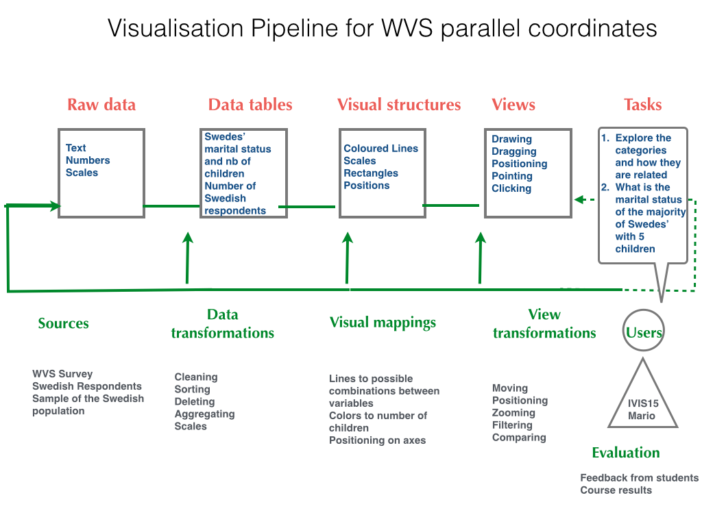

Vera's First Programming Project in D3
Sweden: how is the marital status connected to the number of children?
Analytical trail with WVS visualisation tools
Step 1: Choose the time period.
Step 2: Select the countries to focus on.
Step 3: Select the survey variables 'how many children do you have'.
The image shows the corresponding data table that contains data transformations such as summing, mean, standard deviation and percentages. The bar chart contains visual mappings such as color to number of children and height to the number of respondents in percentages. The data types are categorical and numerical.

Step 4: Choose the crossing variable 'marital status'.
Coosing the crossing variable shows a data table for each possible combination of marital status and children. The data can be transformed into percentages when selected.

In the bar chart, the color is mapped to the marital status, the height of the bar to the number of respondents and the number of children to the horizontal positioning of the bar.

Improvement of the WVS visualization tools
Adding view transformations and modifying the visual structures
The data display in parallel coordinates allows to filter the data according to different variables eg. '2 children' and 'divorced' and gives an approximate number of respondents. The user can move filters around, enlarge them and thereby focus on different categorical data. The data view transformations provided by WVS were limited, no zooming or filtering was possible and the barcharts were not big enough to identify the differences.
